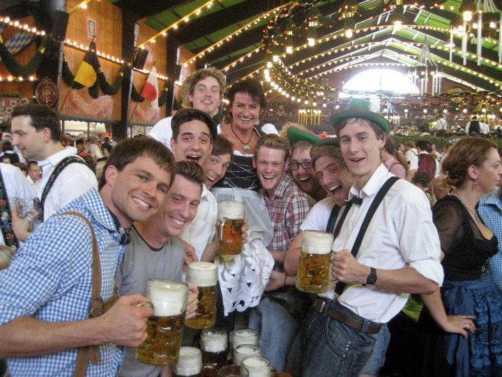
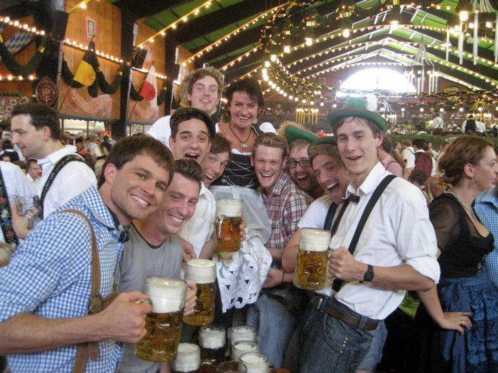
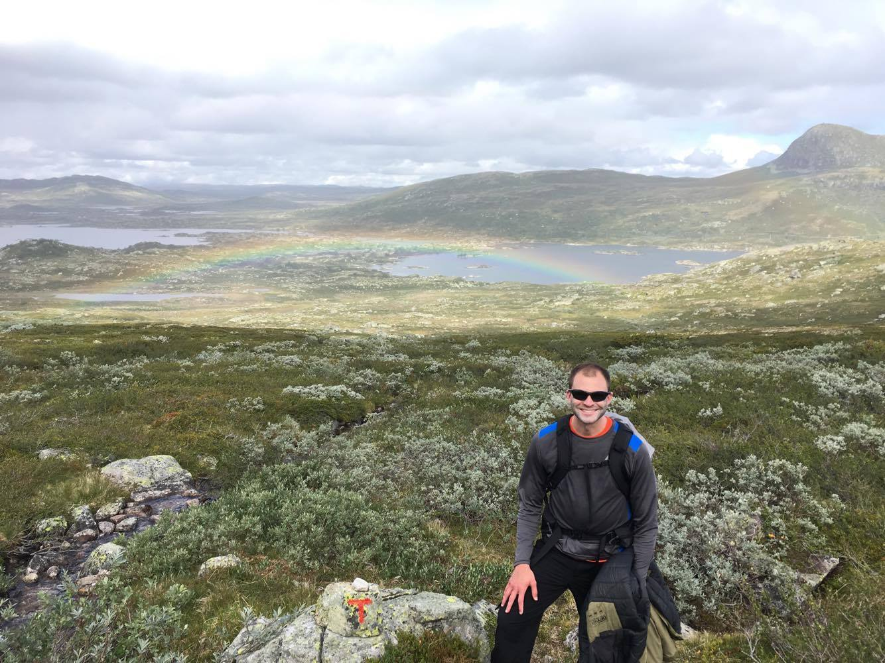
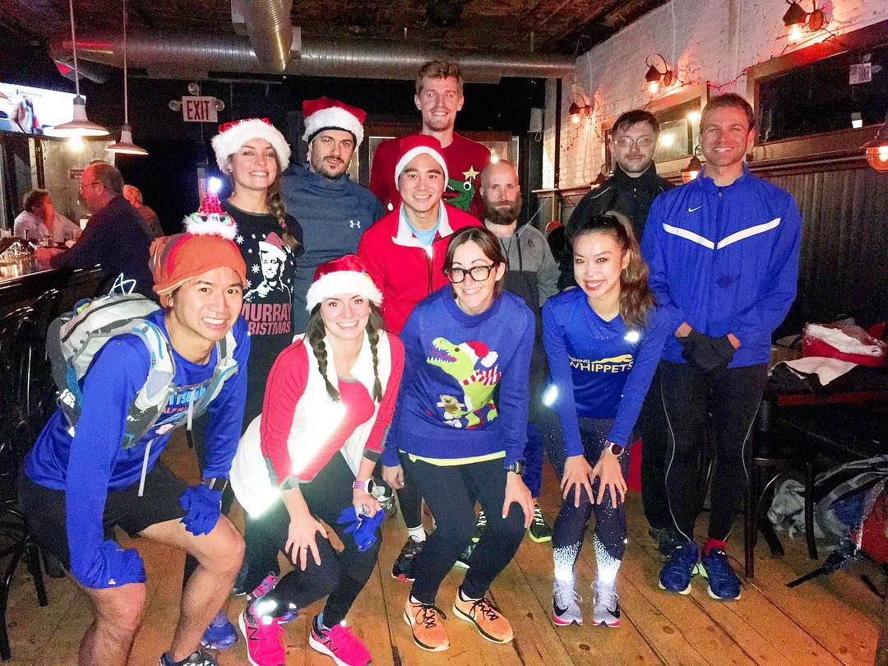
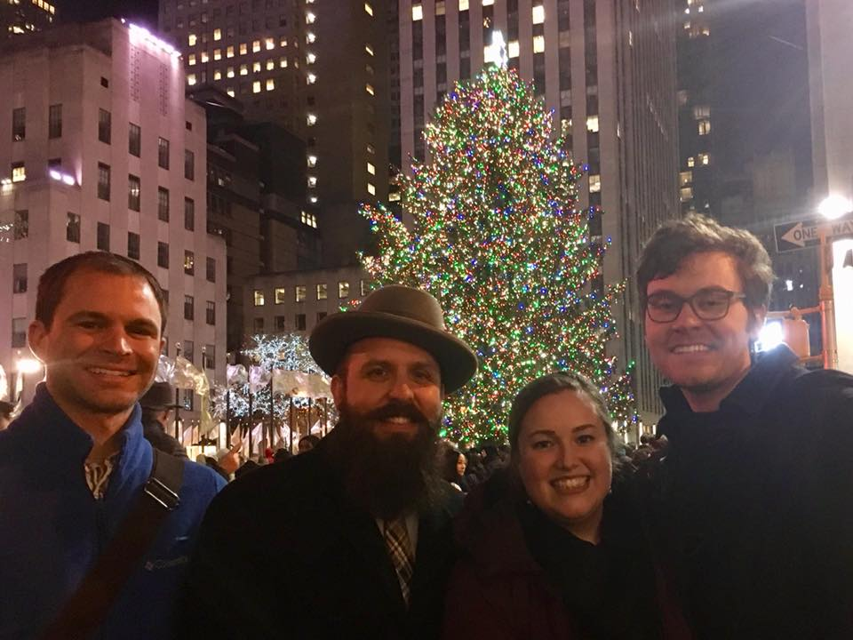
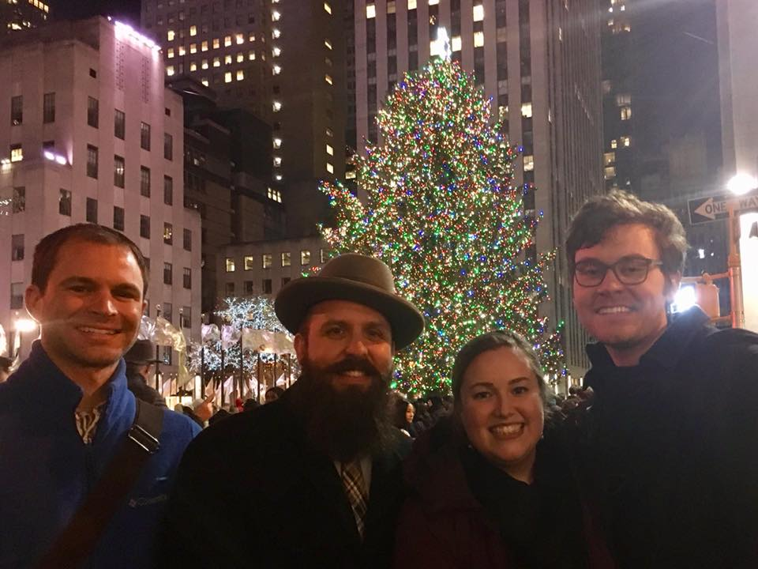

Greetings! Grüß Gott! Thanks for visiting my page. You might be wondering,
why does this person have all those flags at the top of their website?
Well, those flags a part of a larger story of my life, which involves many surprises,
plot twists and turns, and lessons learned.
Click the links below for more information about me, my life, and
words of wisdon I've learned along the way.
When you are done, feel free to submit a question to Patrick at the bottom of the page.
The teacher in me loves answering them! :)
Link to Sample
| Growing up in the Sunshine State |
| Go Gators! |
| Richtung Mannheim |
| Gator Grad School |
| In München steht eine Pattimaus! |
| Life in the Big Apple |
| What's next? |

I was born in California, but moved to Florida when I was six, and spent my youth and adolescent years in the Sunshine State.
I'm very lucky to have my two favorite siblines, my brother Ed and Sister Alice. They are twins,
and I am only four years apart from them in age, which has helped to make us really close. Can't you just tell from the photo how happy I am to be around them?? :)

Family trips were often centered around learning something. Whether it was to a National Park,
a museum, or battlefield, my parents always tried to teach us something about the world. Here we
are meeting Paul Tibbets. He was the pilot of the Enola Gay, which
dropped the first atomic bomb
on Hiroshima. In this photograph, he is reading a story that my brother wrote for his homework about
World War II.
Paul Tibbets liked it so much he asked if he could keep it. We of course said yes, and
when my brother went to school the next day,
his teacher asked for his homework. "I don't have it," he says.
"Paul Tibbets took it from me." As a history teacher myself, that is one of the only valid excuses I would ever accept!
An important milestone in my life was attending the University of Florida.
Describing all of my experiences there would require building a completely separate webpage.
In short, I made some wonderful life-long friends, three of whom are pictured here.

As a 12th grade teacher, my students always ask me what piece of advice
I would give them as college freshmen. My answer is always the same:
joining a sports team, or a club, or just any campus group or organization,
is the abolsute best way to make friends. Some of my most memorable
experiences in college are from the Fencing Team, and all of my closest
friends are from the team as well. We practices together 4 times per week,
traveled the country for tournaments, and always hung out together. If you do
nothing else in college, join a team, club, or social group - it'll be the best choice you can ever make :)
En Garde!!

|
|

|
|
|
|

|
|
|
Part of the advice I give my students is that, while your studies are certainly important, it's your college experiences and friends that you will actually remember.
To that end, I always recommend to my students that they study abroad. My first experience doing so was a short trip to Munich, and then a semester at the University of Mannheim.
I can't fully express how grateful I am for that experience. Not only did my German become much better, but I studied with other students from the University of Florida. Before the trip, we didn't know each other.
After the trip, it felt like we had known each other for years. We still keep in touch, and I'm going to a wedding for one of them in a few weeks. Will I be dressed in Lederhosen for this wedding? Aber natürlich! :)


When I finished my undergraduate studies, I began graduate school at the University of Munich. I was fortunate enough to receive a 1-year scholarship, and also to live in a German dormitory. From this, I was able to not only sharpen my lanague skills, but I met German, Polish, French, Italian, Danish, English, Norwegian, Scottish, and Finnish students. We all became good friends, and I was invited to visit them during the semester breaks. I feel very lucky to have traveled so much during this time, and the friendships that I developed during this time are still holding strong today. Again, my biggest piece of advice to all students: study abroad, meet people, get out there and see the world. It's waiting for you :)
 



After graduating with my Masters in German from UF, I ventured off to New York City in search of employment, adventure, and new experiences. Living in the city that never sleeps can be both exhilirating and exhausting. I chose to go back to graduate school for my Masters in Education, and I became a teacher in Brooklyn. Over the last few years, I've found an awesome running group, met some great people, and traveled a bunch. ALl of those details are too much to include here, but the pictures give you a basic idea of how life has been in the Big Apple.
 
 
